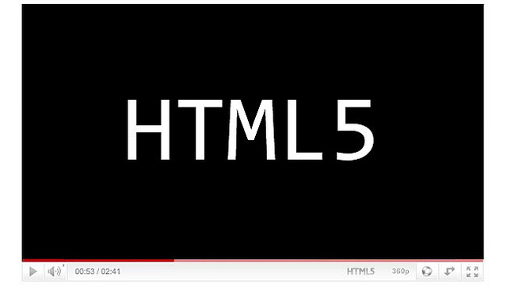

Demostraciones de Prezis
Considero que Prezi es una excelente herramienta. Comparto aquí algunas presentaciones que he hecho usando el servicio.
Ver algunas Prezis
Pruebas con PHP & MySQL
Fue el primer lenguaje de servidor que aprendí, y casi siempre MySQL viene inherente a este. Dejo algunas cosas que hice con PHP y el motor de base de datos.
Ver creaciones con PHP & MySQL
Pruebas con jQuery
Demostraciones de código usando la librería basada en JavaScript, jQuery.
Ver algunos jQueries

Probando HTML5
La más reciente versión del lenguaje de marcado para la creación de páginas web viene recargada. Acá dejo algunas cosas que he probado de la versión 5.
Ver código usando HTML5